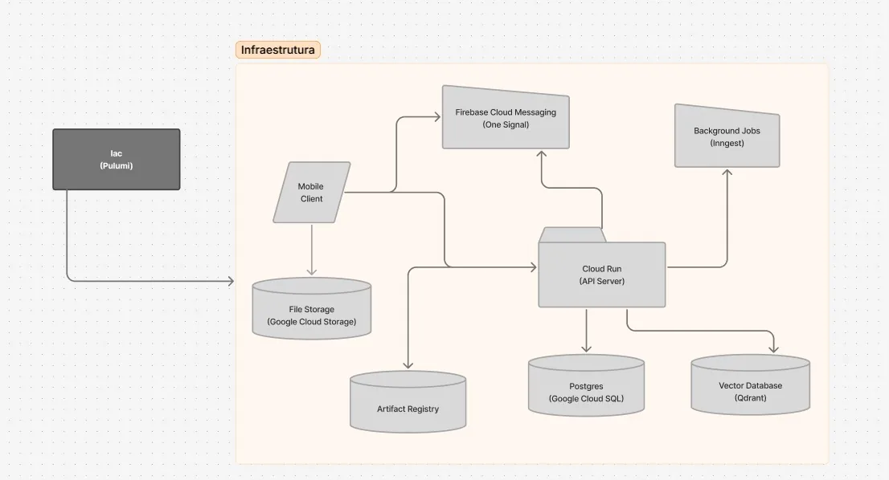
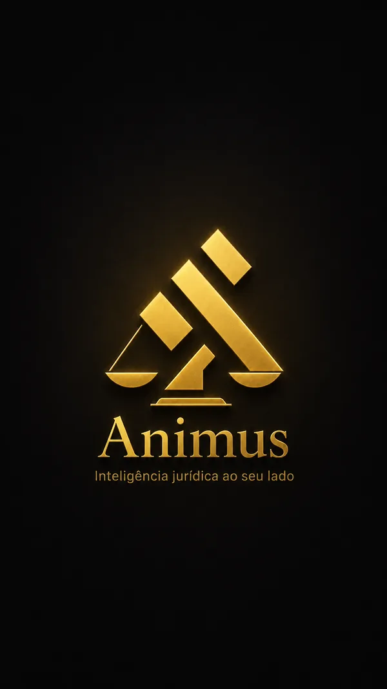

Infraestrutura na nuvem e a abertura do app
Sobre o projeto
Problema
Juízes e advogados precisam encontrar precedentes relevantes para cada caso, mas as decisões estão espalhadas por vários tribunais e a leitura manual de petições extensas é lenta, cara e sujeita a falhas.
Solução
Um app Flutter ligado a uma API FastAPI no Google Cloud. O usuário envia a petição em PDF ou DOCX, um modelo de linguagem gera um resumo estruturado e uma busca híbrida, semântica e por palavras-chave, encontra precedentes na base nacional, classificados por um modelo de aplicabilidade. Há fluxos para juiz e advogado com minutas geradas por IA, biblioteca em pastas, relatório em PDF e notificações.
Minhas contribuições
- Login com GoogleDriver de autenticação com o Google e a integração nas telas de entrar e de cadastro.PR #7
- Redefinição de senha por códigoNo servidor, código de 6 dígitos em cache com limite de tentativas e envio do e-mail em job assíncrono. No app, todas as telas do fluxo.server #26PR #17
- Home e navegaçãoHome com as análises recentes em paginação por cursor, tela de perfil e a navegação inferior compartilhada.PR #8PR #9
- Análises no back-endCasos de uso de criar, listar, obter, renomear e arquivar análises, com testes de caso de uso e de controller.server #15
- Biblioteca de pastasMódulo no servidor com migration e endpoints e a tela no app com abas e grade de pastas.server #31PR #18
- Análise do advogadoTela com upload, resumo, precedentes, minuta de petição e exportação, o maior PR que fiz no projeto.PR #31
- Análises arquivadasBusca com espera de digitação, paginação e desarquivar, além de corrigir a acentuação dos textos de todo o app.PR #26
- Tema claro e escuroPreferência salva no aparelho e migração das cores fixas de 32 telas para tokens de tema.PR #35
Habilidades desenvolvidas
Hard skills · nível ao fim da API
Soft skills
- Revisão de códigoRevisei PRs dos colegas e integrei 9 pull requests no app.
- Comunicação técnicaCada PR com objetivo, changelog, roteiro de teste e justificativa das dependências novas.
- Abertura a feedbackAjustei entregas em mais de uma rodada de revisão até ficarem no padrão do time.
- Cuidado com o usuárioPadronizei a acentuação em português e adicionei rótulos para leitores de tela.
Tecnologias utilizadas
O que levo desta API. Aprendi mobile de verdade e a entregar funcionalidades de ponta a ponta, do endpoint à tela, escrevendo a especificação antes do código.